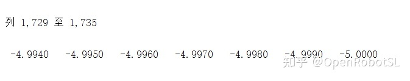
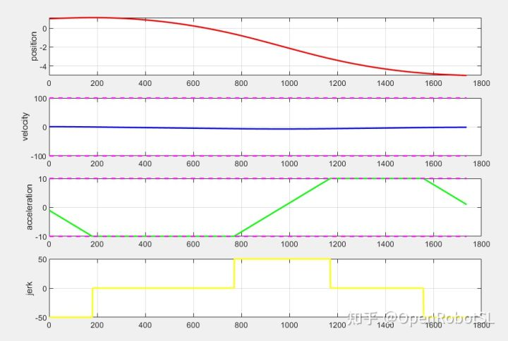

Home
本文转载自： https://zhuanlan.zhihu.com/p/375617837
时间最优轨迹（资料）
牛顿欧拉动力学C++ DEMO
代码在GIT里面。
https://github.com/OpenRobotSL/Line_Circle_Slerp速度规划
https://github.com/OpenRobotSL/TrajectoryPlanning直线圆弧姿态方法是一样的。
框架是：建立直线圆弧姿态方程，归一化参数，建立出位移与坐标关系。通过对位移量（距离）进行规划，得到相应坐标，那么线速度角速度就是满足速度规划要求的运动。
同样通过对位移量（始终为正数）进行实时规划会更加简单，不用考虑反转+-0切换等问题。比较适合机械臂基础指令运动。
大家可自行修改实现下连续更改位移量进行规划（GIT没有给出DEMO），比我之前做的更加稳定，当然也有很大缺点，约束不严格同步不好做等。
机械臂人机交互中过约束问题
留坑。。。。问题描述：传统离线规划不具备实时响应能力。实时规划又是基于约束来做的，如果人机交互中出现过约束后如何在线实时处理?
下图举例，过约束后最短时间恢复原有约束运动状态
连续变约束规划问题
问题描述：
传统规划存在问题，当超出约束后规划失败，或者出现，加速度、速度，跳变。
比如a0=10，但是amax=5，此时规划最大a只能到5，从10如何变到5？
标准S只支持初始化a=0，那么必然会出现跳变or失败。
改进S支持a~=0,但是换向比较麻烦。
当在运行过程中改变约束后，如果还满足限制，那么速度不是最优，因为达不到新约束下的极限。
由此引申出改进算法
下图：1解决过约束问题，2解决时变约束问题，3解决初始状态可任意问题
解决过约束相当于你开车 路过学校路段，发现超速了，那么就要进行减速，满足交通规则，必要情况遇见，斑马线（急停按钮），可急停。
解决时变约束问题相当于 你开车，上了高速，或者从高速下车，那么就要按照当前限速最大来跑。这里变约束很大概率与负载相关，引申出很多关节负载约束算法。
解决初始状态问题相当于 开车前方路线被堵住，而需要绕道，那么如何实现不停车，打转向灯绕路问题。
变时间（动力学）最优规划问题测试
目前算法测试 到 最后两个算法
一个是时间强约束算法，一个是实时动力学约束时间最优算法
难度也是最高得两个实时规划算法，比之前所有算法难度是高不少，每多一个约束规划考虑的因素并不是线性增加。目前实时动力学框架基本完成，测试有点问题。
动力学简单说下，需要用到目标函数求最小时间，约束就是实时动力学，难点在构造目标函数和路径转化能量上。进而求出最优控制量，进行关节运动控制。
对于时间做为强约束，因为按照理论来讲速度规划存在一个最小时间，那么理论讲，如果约束不变，增加时间，理论是可行得。但是实际会存在精度问题等规划失败，实时误差补偿等问题也是要考虑得，这部分在数控规划中基本有比较成熟得解决方案，我之前也做过相关数控规划DEMO。
基于上面简单原理，通过拉长时间使规划成功。
下面分别是T=30s T=18s 下 所有约束一致，初始，结束状态，持续约束状态等。
可以看到可以成功。
连续多点最优速度规划
最近论文盲审，没有时间写东西，之后陆陆续续介绍我论文中用到的一些工程方法
下图为关节空间连续10个路径点的同步最优速度规划，这里的最优速度指的是保证前后两条指令运动相对平滑，不至于出现速度较大震荡，从速度曲线来康，基本保证了多轴在每一个运动段都尽量是匀速，无法保证的则至少保证速度不会出现震荡变化。
具体原理：待补坑，论文盲审中。
运动学库 综合测试问题
结合之前几个简单介绍的 规划问题，做了个动态测试。效果还是可以的。
第一段是超出约束如何柔性回归约束区间。
第二段在要求时间最优状态下到目标位置，也就是以最大极限状态运行。
第三段，时间做为强约束，迫使速度加速度等修改来符合时间规划要求。
在做此类规划问题的时候，核心点是通过对目标位置的不断计算，生成当前状态下最优规划量，不断通过加速度，速度，位置公式 计算新的状态与目标状态误差，辅助人为添加约束条件，就可产生目标下最优解。
时间圆整，误差精度问题分析
前排提示：没有任何一种算法是通用算法，必须针对使用场景来做适配，所以本文会通过最周两个图说明这一点~！
首先给出一组规划数据
as=-1;vs=1;p0=1; 初始约束
ve=-1;ae=1;pe=-5; 终止约束
vlimit=[-100,100]； 速度约束
alimit=[-11,10]; 加速度约束
jerklimit=[-50,50]; 加加速度约束
timelimit=1.6956s; 时间约束
对于我们常用上层控制器来说，一般最低控制周期也就是1KHZ，如果是国外机械臂一般最高 也就提供125-250HZ频率。
按照1KHZ 也就是0.001S来进行插补看。会存在2个比较明显得问题。
1：
timelimit=1.6956s 貌似缺少6*1e-4 这一项。因为dt=1ms 无法获取。
2：
由于我们要严格保证整个过程都满足约束，所以会出现当我们要到达速度，加速度极限得时候，如果此时vt=99.9999,而at=10, 那么如果按照dt=0.001 , dv=a*dt=0.01.
vt+1=100.0099 超越速度极限。
对于问题1，按照时间累加 t=t+dt直接把最后一个插补周期时间改成t=timelimit=1.6956s
的确可以保证末端满足，但是无法保证中间过程满足。也就是问题2
对于问题2，如果保证中间过程满足，当v>vmax,强制v=vmax，那么相当于修改了位移，速度叠加，那么dt没变，就会造成误差累积，因为p=p+v*dt v=v+a*dt,直接影响后面积分。
由此引申出第三个问题，插补步数是否严格执行多少s，就有多少步数，10s 为10/dt步
首先对于timelimit=1.6956s
原始不考虑补偿，一共1695步数，少了6那一步，所以位移没到最后期望-5
如果采用插补时间赋值，控制末端误差，发现末端误差消掉了，但是步数没变，其实还是缺少6那一步，同时会造成速度突变，你想想 如果误差为0.0009 相当于最后走了两个步长。
再来看下中间过程约束，已经超了加速度约束。
那么为了解决以上问题，需要多个方面进行控制和补偿，由此提出一种伪在线补偿技术，由用户设置松约束和硬约束
1 解决速度超限问题，不会超过-10得速度约束，因为时间为软约束，时间变化保过程

2，过程变化保时间, timelimit=1.6956s; 补偿一步插补变成1.696，同时不影响末端位移和速度。
以下就是两种情况，保时间适用于节拍控制，保过程适用于最优控制
最终保时间得优化曲线
最终保过程得优化曲线

TOTG算法——Time-Optimal Trajectory Generation
论文及源码地址：https://www.golems.org/projects/traj.html
As a side note, the algorithm described in “Time-Optimal Trajectory Generation for Path
Following with Bounded Acceleration and Velocity” by Tobias Kunz and Mike Stilman is available as C++ code at https://github.com/tobiaskunz/trajectories. It has no dependencies except Eigen and is thus very easy to integrate. I used it as alternative to IPTP and was very content with computation time and resulting trajectories.
IPTP算法——Iterative Parabolic Time Parameterization
算法原理：TOPP（后有改进版本TOPP-RA），链接中有源码及论文地址。
IPTP算法另一种Improved IPTP by fitting a cubic spline
源码地址：https://github.com/ros-planning/moveit/tree/master/moveit_core/trajectory_processing/src
目前没有找到论文，有个算法描述：
This class sets the timestamps of a trajectory to enforce velocity, acceleration constraints.Initial/final velocities and accelerations may be specified in the trajectory.Velocity and acceleration limits are specified in the model.
This algorithm repeatedly fits a cubic spline, adjusts the timing intervals,and repeats until all constraints are satisfied.When finished, each trajectory waypoint will have the time set,as well as the velocities and accelerations for each joint.Since we fit to a cubic spline, the position, velocity, and acceleration will be continuous and within bounds.The jerk will be discontinuous.
To match the velocity and acceleration at the endpoints,the second and second-last point locations need to move.By default, two extra points are added to leave the original trajectory unaffected.If points are not added, the trajectory could potentially be faster,but the 2nd and 2nd-last points should be re-checked for collisions.
Migration notes: If migrating from Iterative Parabolic Time Parameterization,be aware that the velocity and acceleration limits are more strictly enforcedusing this technique.This means that time-parameterizing the same trajectory with the samevelocity and acceleration limits, will result in a longer trajectory.If this is a problem, try retuning (increasing) the limits.
此类设置轨迹的时间戳以强制执行速度，加速度约束。可以在轨迹中指定初始/最终速度和加速度。在模型中指定速度和加速度极限。
该算法反复拟合三次样条，调整时间间隔，并重复执行直到满足所有约束。完成后，每个轨迹航路点都会设置时间以及每个关节的速度和加速度。样条曲线，位置，速度和加速度将是连续的并且在范围之内。
为了使端点处的速度和加速度匹配，倒数第二个和第二个点的位置需要移动。默认情况下，会添加两个额外的点以使原始轨迹不受影响(这个地方就是三次样条插值的第四种情况：指定初始、最终速度和加速度)。如果不添加点，则轨迹可能会更快，但应该再次检查倒数第二和倒数第二点。
迁移注意事项：如果要从迭代抛物线时间参数化进行迁移，请注意，使用此技术会更严格地强制执行速度和加速度限制，这意味着对具有相同速度和加速度限制的同一轨迹进行时间参数化将导致更长的轨迹。这是一个问题，请尝试调整（增加）限制。
质量很高的相关博客：ROS进阶——运动规划分析
这个链接有三种算法实现效果的简单对比。
======================================================================
我的测试结果及程序
下面是我测试的代码：